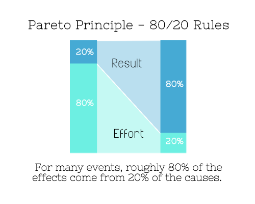
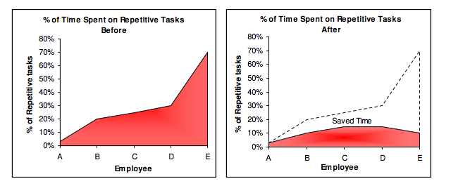

Estar ocupado no significa necesariamente que tengas productividad. Para ser productivo, se trata más de gestionar tu energía que tu tiempo. Debes administrar bien tu vida. Necesitamos aprender a obtener el máximo beneficio con el mínimo esfuerzo. Al no hacer las siguientes 7 cosas, reduje mi jornada laboral semanal de 80 a 40 horas, pero completé mucho más trabajo.
1. No trabajar horas extras aumenta la eficiencia
 La jornada laboral de 8 horas diarias y 5 días a la semana fue un descubrimiento de Ford en 1926. Los experimentos mostraron que al reducir las horas diarias de 10 a 8 y los días semanales de 6 a 5, la productividad aumentó.
La jornada laboral de 8 horas diarias y 5 días a la semana fue un descubrimiento de Ford en 1926. Los experimentos mostraron que al reducir las horas diarias de 10 a 8 y los días semanales de 6 a 5, la productividad aumentó.
En 1980, el informe «Efectos de las horas extras en proyectos de construcción» publicado por la Mesa Redonda Empresarial señaló que, tanto a corto como a largo plazo, trabajar más disminuye la eficiencia y la productividad:
Si se trabaja más de 60 horas semanales durante más de dos meses, el efecto acumulativo de la caída de productividad retrasará la fecha de finalización, mientras que el mismo número de personas trabajando solo 40 horas a la semana incluso terminará antes.
Un estudio militar estadounidense mostró que «dormir una hora menos cada día durante una semana provoca un deterioro cognitivo equivalente a un nivel de alcohol en sangre de 0,1».
«El mundo secreto del sueño» señala:
Después de trasnochar, no importa lo bien que trabajes durante el día, tu estado de ánimo no será muy alto. Más importante aún, disminuyen la disposición al pensamiento prospectivo y a la acción, el control de los impulsos, el optimismo, la empatía y la inteligencia emocional.
Por lo tanto, garantizar un sueño adecuado es muy importante para mantener un alto nivel de productividad.
La experiencia de muchas celebridades es tomar siestas durante el día. Leonardo da Vinci, Napoleón, Edison, la señora Roosevelt, Gene Autry, Kennedy, Rockefeller, Churchill, Lyndon Johnson, Reagan, entre otros, tenían el hábito de dormir siestas.
2. No digas siempre «sí»

Según el principio 20/80 (principio de Pareto), el 20% del esfuerzo produce el 80% de los resultados; pero a la inversa, el 20% de los resultados consume el 80% del esfuerzo. Por lo tanto, debemos concentrar nuestra energía en las cosas que generan el 80% de los resultados y abandonar las demás. Así podremos dedicar más tiempo a las tareas más importantes. Debemos dejar de decir «sí» a las tareas de baja productividad o incluso sin resultados.La diferencia entre las personas exitosas y las muy exitosas es que estas últimas dicen «no» a casi todo.
— Warren Buffett
Esto plantea una pregunta: ¿a qué cosas deberíamos decir «sí» y a qué cosas «no»? Si no se te ocurre qué cosas merecen tu tiempo, prueba con una simple prueba dividida (split test). Haz un seguimiento de todo lo que haces y luego optimízalo en la medida de lo posible.
La mayoría de nosotros dice demasiados «sí», porque es mucho más fácil que rechazar. Nadie quiere ser el malo.
En 2012, una revista de consumidores publicó un estudio en el que los investigadores dividieron a 120 personas en 2 grupos. A un grupo se le entrenó para decir «no puedo (I can't)» y al otro «no hago (I don't)». El resultado fue muy interesante:
Los estudiantes que se decían «no puedo comer X» eligieron comer chocolate el 61% de las veces, mientras que los que se decían «no como X» solo sucumbieron a la tentación el 36% de las veces. Un cambio tan simple en la forma de decirlo mejoró significativamente la elección de alimentos saludables.
Por lo tanto, la próxima vez que necesites evitar decir «sí», di directamente «no hago».
Otro truco para evitar actividades innecesarias es la regla de los 20 segundos: date 20 segundos más para pensar en las cosas que no deberías hacer.
3. No intentes hacerlo todo tú mismo
Una vez gestioné una comunidad muy grande e intenté hacerlo todo yo solo, pero al final descubrí que no podía. Quedé agotado y finalmente la comunidad se hizo cargo de su propia gestión. Sorprendentemente, lo hicieron mejor que yo. Así fue como comprendí el poder de la comunidad.
Es importante que seamos conscientes de que podemos pedir ayuda cuando la necesitemos. Es mejor para ti dejar que alguien que lo haga mejor se encargue de parte de tu trabajo. Esto te permite dedicar más tiempo a tus tareas más importantes. No pierdas tiempo resolviendo problemas tú mismo; deja que los expertos te ayuden.
Muchas veces, aunque tus amigos no puedan ayudarte, su compañía puede hacerte más productivo.
4. No seas perfeccionista
El psicólogo Simon Sherry, profesor de la Universidad de Dalhousie, en su investigación sobre perfeccionismo y productividad, descubrió que el perfeccionismo es un obstáculo para la productividad:
Los perfeccionistas necesitan más tiempo para completar las tareas. Los perfeccionistas se retrasan por esperar el momento perfecto. En los negocios, si esperas al momento perfecto, ya será demasiado tarde. El perfeccionismo suele impedir ver el bosque por los árboles, ya que al prestar demasiada atención a los detalles pequeños se pierde el panorama general.
El mejor momento perfecto es ahora.
5. No hagas trabajo repetitivo

Según un estudio de Tethys Solution, en un equipo de 5 personas, si dedican el 3%, 20%, 25%, 30% y 70% de su tiempo a tareas repetitivas, después de 2 meses de mejora de la productividad (introducción de software de automatización), el tiempo se reduce respectivamente al 3%, 10%, 15%, 15% y 10%.Ahora, cada vez que necesito repetir algo más de 5 veces, me exijo encontrar un programa que lo haga por mí. No importa si no sabes programar; si no sabes desarrollo, compra un programa.
La gente suele olvidar que el tiempo es dinero. La razón por la que lo hacen manualmente suele ser porque es más fácil y no requiere investigación. Procesar 30 imágenes parece no ser un problema, pero ¿y si son 30 000? Solo puedes usar software para procesarlas. Recuerda, necesitas gastar dinero para ganar dinero, y el tiempo es tu mercancía más valiosa.
6. No tomes decisiones basadas en conjeturas
Si un sitio web puede optimizarse para SEO, la vida también puede. No tomes decisiones a ciegas por conjeturas; respalda tus decisiones con datos.
Hay muchos estudios en diferentes campos a los que se puede recurrir. Por ejemplo, ¿sabías que a las 4 de la tarde es cuando las personas se distraen más fácilmente? Es un estudio dirigido por Robert Matchock, profesor asistente de la Universidad de Pensilvania. Incluso si no encuentras los datos que necesitas, realizar un split test no requiere demasiado tiempo.
Pregúntate constantemente cómo piensas medir y optimizar todo lo que haces.
7. No trabajes todo el tiempo
La mayoría de las personas no se dan cuenta de que si nos concentramos demasiado en una cosa, nos limitamos a nosotros mismos y no podemos salir del marco. Es muy importante desconectarse del trabajo de vez en cuando y estar a solas. Según «El poder de la soledad», el tiempo a solas es muy beneficioso para el cerebro y el espíritu:
Un estudio de Harvard mostró que si una persona cree que está experimentando algo solo, su recuerdo es más duradero y preciso. Otro estudio mostró que un tiempo de soledad puede hacer a las personas más empáticas. Aunque nadie cuestiona que un excesivo aislamiento temprano no es saludable, un cierto tiempo de soledad puede mejorar el estado de ánimo y el rendimiento académico de los adolescentes.
Es importante dejar tiempo para la reflexión. Cuando no buscamos soluciones, a menudo estas llegan inesperadamente.
Por supuesto, no podemos volvernos más productivos de la noche a la mañana. Como todo en la vida, requiere esfuerzo. No se pueden esperar cambios sentándose a esperar. Todos necesitamos conocer mejor nuestro cuerpo y encontrar la mejor manera de distribuir nuestra energía para tener una vida más exitosa y feliz.
Este artículo fue36Krcompilado demedium.com]